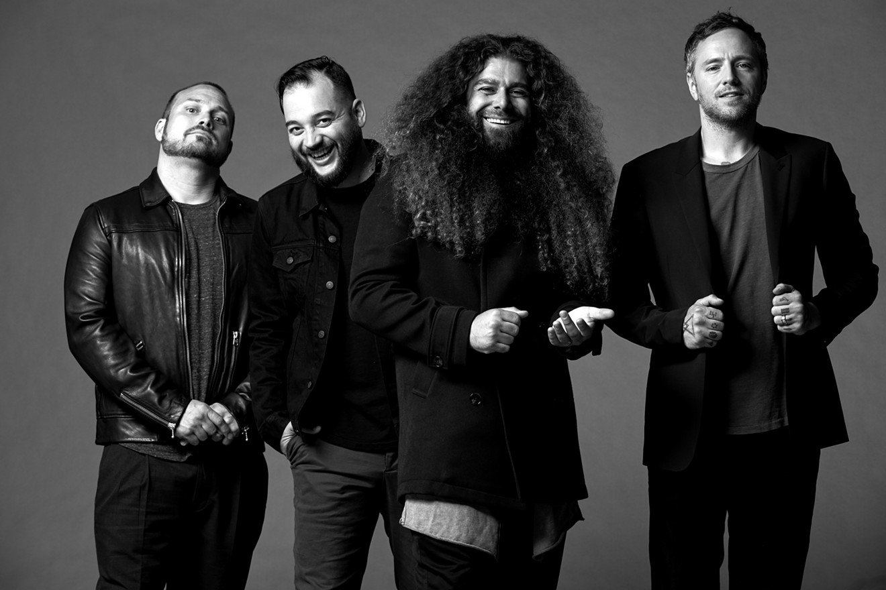
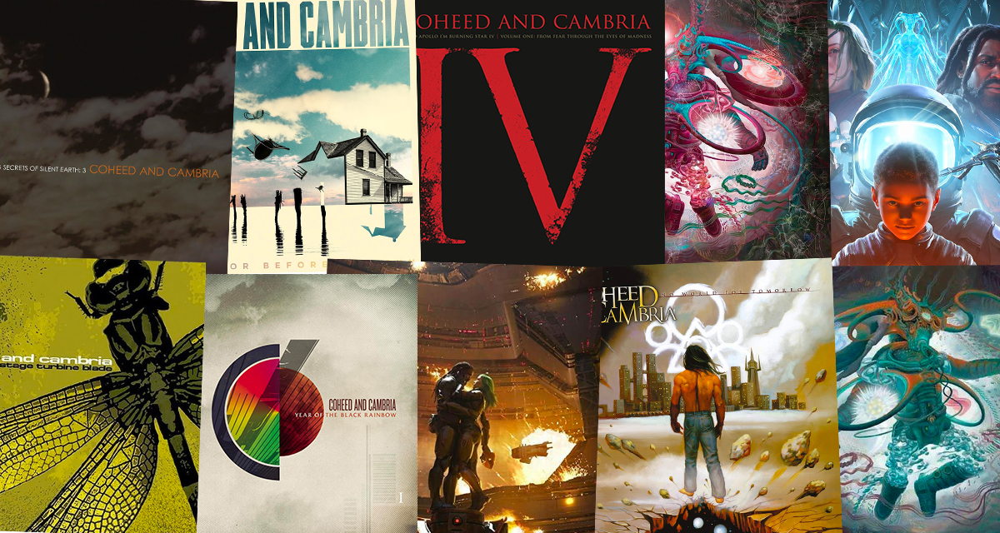

Coheed and Cambria is a progressive rock band out of New York who have garnered a die hard fan base for their unique sound and story telling abilities.
The band is themed around one of the many other works from the mind of lead singer and guitarist Claudio Sanchez, The Amory Wars. The band's first seven albums all told different stories and chapters from the comics.
The band's 2015 album The Color Before The Sun is a non-conceptual album that doesn't follow the comic series, and the band's latest two albums are the first two parts of a five part sequel to The Amory Wars.

While the main genre that is associated with the band is progressive rock, their sound varies vastly from track to track and album to album. Some of the older albums are much heavier with darker undertones, while the newest albums are almost pulled straight out of the 80's at times.
Not every song will be for everyone, especially at first, but there's a Coheed song out there for everyone. You've probably heard their song "Welcome Home" as it was featured in one of the trailers for the Tim Burton movie "9"

Claudio Sanchez is the mastermind behind the band and all of it's stories, along with his wife Chondra who helps with his comic writing.
Chondra also sings alongside Claudio in another band project that he has called The Prize Fighter Inferno, which is serves as a prequel to the story of The Amory Wars through the eyes of one of the characters, Jessie.